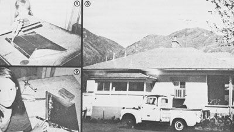

Here's a way to use a little ingenuity and save a whole lot of money!
A number of years ago, I covered my home's entire 1,800-square-foot roof with aluminum shingles-a job that would have set me back more than $2,000 if it had been done commercially-for a cost of only $60!
I chose aluminum because it can last a lifetime, is fire- and rustproof, and will often reduce heating and cooling expenses. In addition, such shingles are lightweight . . . an important consideration when you have to lug hundreds of them up a ladder. What really clinched my choice, however, was the discovery that this roofing material can be easily salvaged from inexpensive, used printing plates!
SHOP AROUND
A little research convinced me that the best print-shop "leftovers"-for shingle use, at least-were .009" thick and measured 24-5/8" X 36". Telephone calls to several local presses proved that such plates vary quite a bit in availability and in price. However, I finally located one small-job printer who had thousands of the shingles-to-be that he was more than willing to unload for the bargain price of 10 cents apiece!
So, I drove to his shop and carefully selected undamaged plates that had a sturdy, 1/8" doubled-over edge (created when the aluminum was locked in the press). In two hours, I had loaded 600 of the metal sheets in my truck . . . and had thoroughly blackened my clothes and gloves. (Printer's ink soils everything it touches, so always don old stained garments when you work with this recycled aluminum.)
CUT 'EM UP!
I soon determined that-if I cut the 2' X 3' plates into fourths-I could produce shingles that were attractive and strong enough to resist our Utah mountain winds. So I placed a single aluminum sheet-printed side up-on my work surface . . . measured carefully to determine the midpoint of each side . . . lined a yardstick up across the marks . . . and scratched in a "cross hair". I then used scissors to divide the plate up into four equal sections . . . and these rectangles became the patterns for the rest of my plates.
I found it easy to cut the sheets with my stout scissors. In fact, I was able to quarter 10 sheets in about 25 minutes . . . and the job could be done much more quickly with a paper cutter. (An even faster method would be to pay the print shop to "size" the plates with a power knife . . . but my pressman didn't have one of the tools on hand.)
A TEMPLATE AND TOOLS
I decided to fashion each shingle into a parallelogram . . . for a number of reasons: The "lopsided rectangles" only required one thickness of aluminum, involved few manufacturing steps, allowed me to overlap each piece of "roofing" on all four edges, produced slanted vertical "tiles" (to shed water well), were easy to mount, and made it possible to secure three of each shingle's corners with only two nails.
In order to produce the finished metal "shakes", however, I first had to make a template-17-1/2" long and 10" highwhich I cut from a piece of 1/8" paneling. I then marked two points (4-1/2"-horizontally-from the upper right and lower left corners), scribed lines connecting these dots to, respectively, the lower right and upper left angles .. . and sawed off the two indicated triangles to create the parallelogram form pictured in Photo 1.
Then, after rounding up a table knife, a 16" scrap of steel strap, and a 6" piece of 2 X 4 from my woodpile . . . I set to work.
HOW TO FOLD 'EM
To fold the shingles, I placed one of the mini-sheets-shiny side down-on my work surface. The 1/8" press-folded edge was closest to me (turned under), and the sheet protruded about one inch over the table's edge. Next, I put the template on it, so that the top edges lined up and the acute angles of the template were even with the sides of the printing plate . . . then, the one-inch aluminum "tongue" that stuck out toward me was folded up and over the bottom edge of the template, to form a small pocket.
At that point, I used the scissors to make two small cuts-just through the 1/8" fold at the top of the pocket-positioned four inches from the left side of the sheet and six inches from its right edge. Photo 1 shows my daughter's hand (yes, even a nine-year-old can do it!) making these "snips" and beginning the next step . . . which is to wrap the exposed triangles of metal up and over the sides of the template. A wooden block (such as the one in Photo 2) is used to press each fold almost-but not quite-flat.
The last stages in shingle production are shown in Photo 2. Place the piece of strap iron along the slanting fold at the right side, and bend the triangle of metal back over itself. (When the strap is removed, it will leave a small trough or pocket.) A table knife is then used to lift the 1/8" "tab" between the two bottomfold cuts.
This may sound complicated, butafter a little practice-the steps flow smoothly in a "line up, fold bottom, make cuts, fold sides, remove template, squash folds, make right-side pocket, and open 1/8" edge" sequence.
I found I could finish 40 shingles in 20 minutes, and-after working four Saturdays and five week nights-I had the 2,000 shingles I needed.
In the years since this roof was installed, our heating and cooling bills have been less, and the homemade, interlocking shingles have weathered 80MPH winds and heavy snows. Yes sir, my "bargain basement" roofing has passed the test of time, and I still feel a glow of pride and accomplishment every, time I come home and see its beautiful, diamond-like pattern glowing in the afternoon sun.
EDITOR'S NOTE: This article was condensed from the author's 14-page pamphlet, How I Shingled My Roof for $60. For more information, write D. Simmons, Dept. TMEN, Box 7154 University Station,, Provo, Utah 84602.
I'm not a professional roofer by any stretch of the imagination, so what I'll say here certainly won't be the last word on shingle mounting. However, the method that follows did work on my own house, and can probably give you some idea of how to proceed.
First, since aluminum is slippery stuff-and because I didn't want to put too much stress on my lightweight creations-I planned to work from right to left and place the shingles (one above the other) in vertical strips . . . while I sat safely to one side on the old asphalt roof.
Here's the procedure: I hooked each plate's 1/8" "lip"-beneath edge "A"-over the top of the shingle below it, and slipped the right side "B" of the aluminum shake into the strapiron-formed pocket of the matching shingle in the row immediately to the right. This placed the upper right obtuse corner of the "new" tile beneath the upper left acute angle of the shingle in the preceding row. These two corners-"C" and "D"-were then secured with one nail (near enough to the upper edge to be covered by the next shingle), while a second fastener was used to hold down the "flap" at "E". In this way, all of the sides of my shingles overlapped, and two roofing nails were sufficient to secure three corners of each of my plates. Finally, any nailheads that-because of nonuniform shingles-were not covered by another aluminum plate received a waterproofing coat of black plastic sealant.
EDITOR'S NOTE: Although Mr. Simmons didn't use them, we recommend rubber-fitted roofing nails for this job.
|
 [1] To make your shingles, fold a one-inch pocket over the template and snip two cuts in the 1/8"" doubled dge. [2] Place the strap iron along the right slanting fold, bend the metal trian gle over itself, and lift the tab between the two cuts. [3] The finished product! |
|
|